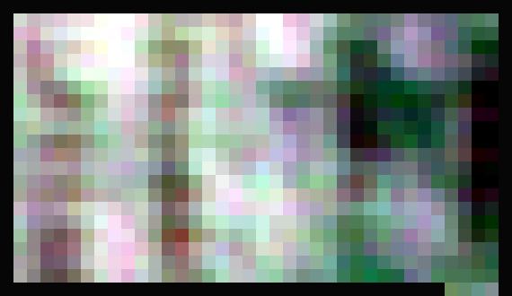
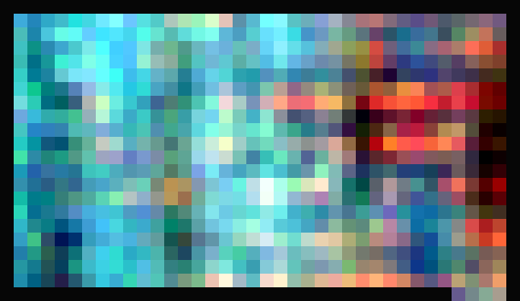

RiceUAS plot imagery · Multispectral CNN
Actual held-out test-split sample, 27 May 2022 · plot 31760. RGB and false-color previews are derived from this plot’s TIFF bands. The CNN returns one plot-level estimate in t/ha, not a pixel map; its recorded 2022 test R² is −0.004, so interpret estimates cautiously.


RiceUAS site weather at image date—
Loading matching historical observation…
The seven-day context will appear when archive data is loaded.
Historical site context only; weather is not an input to the multispectral CNN.
No CNN prediction run yet. Load this matching five-band sample or choose your own TIFFs below.
Fixed reference preview from the included 38 × 22 pixel test-split plot; stretched for display only. Choosing other files does not update this preview.